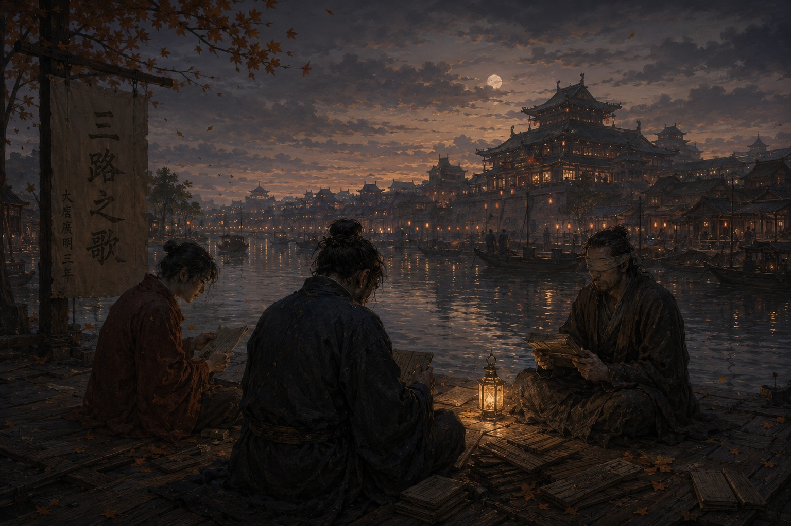

Дело о четвертом пути

После северной площадки нам полагалось почувствовать облегчение. Тайна, за которой мы шли столько лет, перестала быть тайной. Мы нашли хранителей, узнали, что Великое Решение в самом деле было записано, и слышали, как эту запись уничтожили. Но вместо облегчения пришла усталость, совсем не похожая на ту, что бывает после долгой дороги. Так устает человек, который слишком долго всматривался в темноту и наконец убедился, что в ней действительно кто-то есть.
Осень выдалась сухой. По дорогам все чаще шли вооруженные люди. На постоялых дворах говорили о губернаторах, которые уже почти не подчинялись столице, в чайных домах спорили о ценах на зерно. На юге случился неурожай, на севере начали грабить казенные склады. Империя еще существовала, чиновники исправно ставили печати, монахи били в колокола, лодочники водили суда по каналам, но в голосах людей появилась новая нота. Я не сразу ее распознал, а потом догадался: никто больше не говорил о будущем уверенно.
Спустя несколько месяцев мы снова собрались в столице. Меня к тому времени отозвали с севера, потому что округ отходил мятежному губернатору и следователь там был уже не нужен. Ло отпросился из дворцовой охраны на вечер, Цзянь пришел из архива. Никакого дела у нас не было, мы просто слишком долго не сидели втроем. В тот вечер Цзянь показал нам находку, которая не давала ему покоя. Он принес несколько копий древних документов и целую связку пластин для меня. Я читал их почти до ночи, пока Ло читал свитки. Во всех текстах, во всех песнях и преданиях говорилось о трех дорогах, и нигде не объяснялось, почему их именно три.
Это выглядело мелочью, и поэтому Цзянь за нее ухватился. Забыть важную вещь человек может, но объяснить ее он забывает редко. Если десятки книг и песен молчат об одном и том же, значит, молчание кто-то устроил.
Следующие месяцы ушли на проверку этой безумной мысли. Мы искали подтверждений в песнях, старых картах, родословных, в преданиях пограничной стражи и в монастырских архивах. Цзянь почти перестал спать, Ло носил ему еду и силой вытаскивал на улицу. Я слушал чиновников, библиотекарей и стариков, которые помнили старые истории лучше любых книг. Постепенно складывалась картина, слишком странная, чтобы поверить в нее сразу.
Однажды ночью Цзянь вложил мне в руку пластину. Знаки были вырезаны глубоко и очень ровно, над ней он явно просидел не один час. На ней стояло всего четыре слова: «Дорог было не три». Я посидел молча, перечитал и перечитал еще раз. Ло, следивший за моим лицом, забрал пластину и разобрал ее сам. После этого мы долго не двигались. Не знай я Цзяня столько лет, я решил бы, что он ошибся. Но в таких вещах Цзянь не ошибался никогда.
Мы стали искать с удвоенным упорством и находили уже не доказательства, а следы того, что доказательства были убраны. В древнем трактате один столбец вырезали так аккуратно, что заметить это можно было только при сличении нескольких копий. В храмовой хронике недоставало одного знака. В старой песне посередине ломался ритм. В родословной одного рода не хватало поколения. Отовсюду словно вынули каждого четвертого.
Тогда мы поняли, что когда-то дорог было четыре. Три из них достались слепым, глухим и немым. Четвертая принадлежала тем, кого позднее назвали целостными.
Всю жизнь я представлял их иначе, как, наверное, и все остальные. Нам казалось, что целостные были утраченным совершенством, вершиной человеческой природы, к которой следует стремиться. Правда оказалась сложнее. Это были обычные люди, умные и глупые, добрые и жестокие, храбрые и трусливые, благородные и подлые. Лучше остальных они не были. Они только воспринимали мир во всей полноте. Среди них началось то бедствие, которое едва не погубило страну, и среди них же нашлись люди, придумавшие Разделение. Виновники и спасители оказались одним и тем же народом. Когда мы это поняли, мне вспомнились слова незнакомца о том, что я все еще спрашиваю, кто виноват. История не делилась на добро и зло. Она делилась на тех, кто принимал решения, и тех, кому потом пришлось жить с последствиями.
Самая тяжелая находка ждала нас в конце. Мы нашли свидетельство одного из последних целостных. Он не был ни императором, ни полководцем, ни мудрецом, это был простой человек. Текст сохранился плохо, но одну фразу удалось восстановить целиком: «Когда-нибудь разделенные должны будут снова научиться быть вместе».
Мы долго молчали, потому что все трое поняли одно и то же. Разделение никогда не было целью. Оно было лекарством, и притом временным. Лекарство не принимают всю жизнь, иначе оно само делается болезнью. Вся история нашего мира вдруг предстала перед нами иначе. Предки не строили совершенного порядка. Они перекинули мост через пропасть, а потомки приняли мост за берег.
Тогда Ло, который в тот вечер только читал и смотрел на нас, произнес два слова:
— Уже поздно.
Я спросил почему. Он долго не отвечал. Цзянь тронул мой рукав и коротко вырезал: «Смотрит в окно». Потом Ло заговорил. Он сказал, что на улицах с каждым днем больше солдат, что чиновники торопятся закончить дела до зимы, а торговцы вывозят товар из неспокойных провинций, и что Империя уже разваливается. Я хотел возразить и не смог, потому что слышал то же самое в разговорах путников, в письмах из провинций, в слухах о мятежах и в вестях с границ. Мы нашли ответ слишком поздно. Нам самим он еще мог пригодиться, а Империи уже нет.
Через несколько недель Ло получил приказ отправляться на северную границу. Там начались волнения, и опытные люди требовались повсюду. Ло принял новость спокойно. Только однажды вечером он долго сидел рядом со мной и ничего не говорил. Еще через месяц Цзяня назначили старшим хранителем архива в дальней южной провинции. Он давно заслужил такую должность, и отказаться было нельзя. На этот раз нас никто не разлучал нарочно. Нас разводила сама распадающаяся страна, и впереди было самое обыкновенное расставание, без трагедии и без подвига. Оно оказалось страшнее первого.
В последнюю ночь перед отъездом Ло мы сидели на берегу канала. Осенний ветер гнал по воде мелкую рябь, где-то далеко пели лодочники. Цзянь что-то вырезал на пластине, бросал ее и брал новую. Наконец он вложил одну мне в руку. На ней стояло: «Что будет дальше?»
Я долго думал и ответил честно, что не знаю. Впервые за много лет я действительно не знал, увидимся ли мы снова, переживет ли Тан ближайшие десятилетия, услышит ли кто-нибудь последний куплет песни. Зато я понял одну вещь. Весь этот год мы искали четвертую дорогу, а ее давно нет. Остались три, и каждая идет своим путем. Четвертая возникает только там, где они сходятся.
Поздно ночью мы простились. Ло уехал на север, Цзянь на юг, к своим архивам. Я остался в столице слушать, как огромная Империя скрипит всеми балками разом. Тогда мне казалось, что история на этом кончается. На самом деле начиналась ее последняя глава.